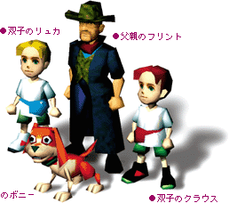
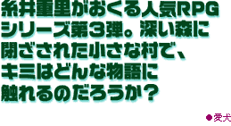
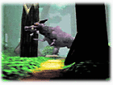
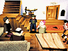
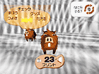
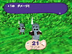
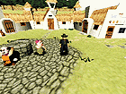

1999 NINTENDO/HAL Laboratory,Inc./Shigesato Itoi
2000年5月発売予定
● 振動パック対応


この物語の主人公は、ある平和な村に住んでいる4人の家族＋１匹の犬。ある日、近くの入り江に正体不明の物体が現れてから、村に異常な出来事が起こるようになりました。
さらに森の奥から聞こえてくる、不気味で恐ろしい叫び声。『森で何かがおきている！！』父親であるフリントは、森を、村を、そして愛する家族を守るため、森の奥へと向かうのでした・・・。

今度のマザーはいくつかの章に分かれている。各章によって、主人公が変わるけれど、全章を通してひとつの物語として成り立っているから、一人一人が生きている。

RPGには欠かせないバトルも普通じゃない。走って跳んで体当たり！リズムにのって連続攻撃！戦略性もプラスしているから、敵との駆け引きが大事になるぞ。

使うタイミングがポイントだ。戦闘中の場所の「エナジー」を利用して、強力な「マホウ」を使うことができる。ただし使いすぎると頭がオーバーヒートしてしまうので注意？

バトルを盛り上げるBGMも、正統派からちょっと？系まで様々。それにストーリー以外のところで盛り上がる変なイベントも盛りだくさん。思わず笑っちゃうかも。
※画面は、全て開発中のものです。